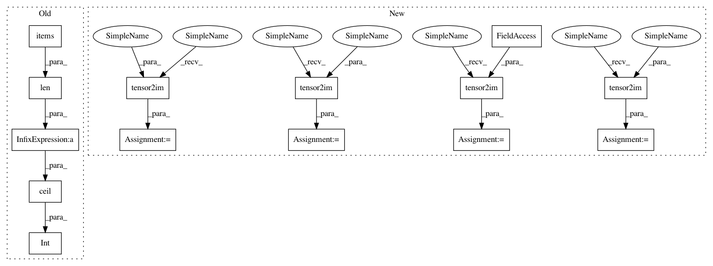

f4af199e0025065d7006fe326b55f25a74e9d625,util/visualizer.py,Visualizer,display_current_results,#Visualizer#Any#Any#Any#,37
Before Change
title = self.name
label_html = ""
label_html_row = ""
nrows = int(np.ceil(len(visuals.items()) / ncols))
images = []
idx = 0
for label, image_numpy in visuals.items():
label_html_row += "<td>%s</td>" % label
After Change
images = []
idx = 0
for label, image in visuals.items():
image_numpy = util.tensor2im(image)
label_html_row += "<td>%s</td>" % label
images.append(image_numpy.transpose([2, 0, 1]))
idx += 1
if idx % ncols == 0:
label_html += "<tr>%s</tr>" % label_html_row
label_html_row = ""
white_image = np.ones_like(image_numpy.transpose([2, 0, 1])) * 255
while idx % ncols != 0:
images.append(white_image)
label_html_row += "<td></td>"
idx += 1
if label_html_row != "":
label_html += "<tr>%s</tr>" % label_html_row
// pane col = image row
self.vis.images(images, nrow=ncols, win=self.display_id + 1,
padding=2, opts=dict(title=title + " images"))
label_html = "<table>%s</table>" % label_html
self.vis.text(table_css + label_html, win=self.display_id + 2,
opts=dict(title=title + " labels"))
else:
idx = 1
for label, image in visuals.items():
image_numpy = util.tensor2im(image)
self.vis.image(image_numpy.transpose([2, 0, 1]), opts=dict(title=label),
win=self.display_id + idx)
idx += 1
if self.use_html and (save_result or not self.saved): // save images to a html file
self.saved = True
for label, image in visuals.items():
image_numpy = util.tensor2im(image)
img_path = os.path.join(self.img_dir, "epoch%.3d_%s.png" % (epoch, label))
util.save_image(image_numpy, img_path)
// update website
webpage = html.HTML(self.web_dir, "Experiment name = %s" % self.name, reflesh=1)
for n in range(epoch, 0, -1):
webpage.add_header("epoch [%d]" % n)
ims, txts, links = [], [], []
for label, image_numpy in visuals.items():
image_numpy = util.tensor2im(image)
img_path = "epoch%.3d_%s.png" % (n, label)
ims.append(img_path)
txts.append(label)
links.append(img_path)
In pattern: SUPERPATTERN
Frequency: 3
Non-data size: 14
Instances
Project Name: junyanz/pytorch-CycleGAN-and-pix2pix
Commit Name: f4af199e0025065d7006fe326b55f25a74e9d625
Time: 2018-04-18
Author: junyanzhu89@gmail.com
File Name: util/visualizer.py
Class Name: Visualizer
Method Name: display_current_results
Project Name: junyanz/pytorch-CycleGAN-and-pix2pix
Commit Name: f4af199e0025065d7006fe326b55f25a74e9d625
Time: 2018-04-18
Author: junyanzhu89@gmail.com
File Name: util/visualizer.py
Class Name: Visualizer
Method Name: display_current_results
Project Name: Zhaoyi-Yan/Shift-Net_pytorch
Commit Name: 8f6a6f153781d0908fb0904349aae844494026ea
Time: 2018-12-03
Author: yanzhaoyi@outlook.com
File Name: util/visualizer.py
Class Name: Visualizer
Method Name: display_current_results